为什么说啤酒是饮料中的「联合国」？
们在知乎上提了一个问题「啤酒的最佳美食CP是什么？」很多知友认为亲朋好友聚会中啤酒是必需品；也有情侣在密语时，选择来点啤酒，增强气氛。
为什么啤酒被誉为是饮料中的「联合国」？想要了解啤酒的前世今生，要从「一万年历史」「两种发酵工艺」「三个美食搭配原则」「四种风格」「五感体验」开始，掌握这「一二三四五」口诀，就能轻松涨涨啤酒知识。
1、人类享用啤酒的时间可能超过 1 万年
啤酒可以说是万能的「社交网红」，人类享用啤酒的时间可能超过了 1 万年。
啤酒的诞生是一场美丽的意外——公元前 9000 年，美索不达米亚人开始采集野生大麦，一次偶然的机会，他们把麦粒丢进陶罐就打猎去了。而正是这段时间，自然界出现了神奇的巧合：一场降雨打湿了大麦，促使它们生长、产生糖分。又一场大雨灌满了陶罐，野生酵母得以分解糖分，进而转化为酒精和二氧化碳……而这，就是最原始的啤酒。
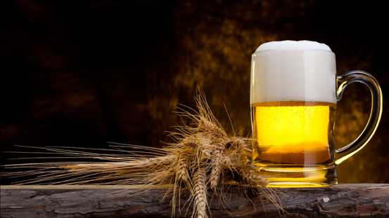（啤酒的原料之一大麦)
可能一个天生的酒鬼受到酒精和麦芽的感召，一口灌下去，一种从未有过的奇妙味道冲击着他的味蕾。「这玩意真是太特别了！」他开始呼朋引伴都来尝试一下这种液体。从此以后，一切都改变了。啤酒让原始人的生活变得更加有趣，他们开始暂时放下手中的石头与棍棒，分享啤酒，进行社交，从此开始迈入了文明世界的大门。
啤酒的酿造中有种植物必不可少，那就是啤酒花，又称作蛇麻。第一批啤酒花大约于公元 1000 年出现在德国不莱梅的汉莎商业公会。1150 年左右，本笃会修道院院长长希尔德加德，在书中写道「正是因为它包含苦涩，所以投入那些易腐的饮料中，可以让其保存更持久。」在没有巴氏消毒法之前，如果不放啤酒花啤酒很少能存放超过两周。啤酒花给予了啤酒独特又迷人的苦涩感，还具有天然的防腐作用，让啤酒在数年后依然能保证品质。
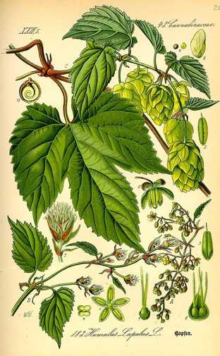（啤酒花）
2、百种风格的啤酒，从分类上说只有两种
虽然啤酒在人类历史上扮演着重要的角色，但其实啤酒酿造的原料非常简单：麦芽、酵母、啤酒花、水。作为最有深度和广度的饮料 之一，她可以让你体会麦芽的香甜，也能感受到酒花的浓郁，各种酵母带在发酵过程中散发出的奇妙味道，更不用提添加的各种奇思妙想的辅料，带来无限的可能性。
在大部分的认知当中，啤酒分为三种：白啤，黄啤，黑啤。但如果此时你看到一杯红色的啤酒，你该如何分类？红啤？圣帕特里克节的时候，某些爱尔兰酒吧还会推出绿色的啤酒，莫非要多出「绿啤」的分类？显然这样粗暴的分类方法是不科学的。
啤酒从发酵工艺上来区分，只有两种：艾尔（Ale）啤酒和拉格（Lager）啤酒。
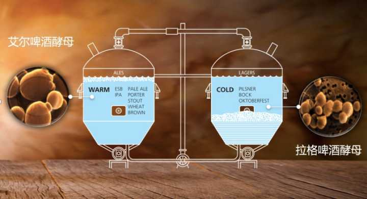（艾尔啤酒和拉格啤酒酿造）
艾尔指的是上层发酵的啤酒，即发酵时酵母悬浮在酒液上层。这种发酵方式往往是酵母的发酵习惯决定的，反之拉格啤酒在发酵环节中，酵母沉在酒液底层。艾尔啤酒对发酵的室温要求更高，但相比于拉格酵母，它的发酵时间更短，最终形成的啤酒在风格上香气更加浓郁，口感往往更醇厚。
拉格啤酒恰恰相反，它需要的发酵温度更低，而最终它呈现出的酒体更清爽，酒液清澈，风味上更加简单易饮。因为低温下酵母的活动比较可控，啤酒的品质稳定，所以拉格更适合于大规模的工业化生产。随着制冷设备的出现，这种啤酒更是席卷了全球。我们现在平时在市面上大部分喝到的啤酒，90% 以上都是拉格啤酒。
3、啤酒与美食搭配的三点原则——ABC 美食原则
「下雪了，怎么能没有炸鸡和啤酒？」这句话曾随着韩剧的热播像流感一样散布开来，就算你没有真的尝试过这个组合，但你至少听说过。
不过如果你在被问到「啤酒应该搭配什么食物？」还是只能给出这个毫无新意的答案，就显得太没有创意了 。毕竟没有人规定啤酒只能配油炸食品。
除了众所周知的葡萄酒，其实啤酒以其风味的复杂与丰富性，与食物一起也有无限种令人惊奇的可能。在做啤酒的餐酒搭配的时候，我们一般推荐「ABC原则」，完全根据自己的喜好来做搭配，非常简单容易上手。
A-Align-匹配
匹配的原则关注的是食物和啤酒浓度的一致性，原则运用于两种味道很接近，而不希望某个味道特别抢戏。比如用清爽怡人的百威啤酒搭配龙虾沙拉，酒液透亮，顺滑的口感搭配龙虾的鲜嫩更加美味。
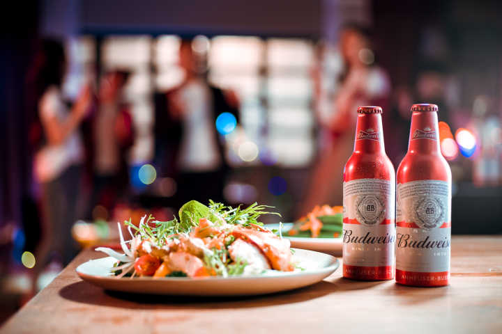B-Bridge-衔接
衔接的目的在将多种风味很好地关联到一起，从而给人带来一种全新的味觉体验。比如用时代啤酒搭配鲜香诱人的糯米鸡。淡金色酒液，口感清新。酒花的风味遇上糯米鸡荷叶的清香，相得益彰。再比如用口感清爽顺滑，泡沫细腻的福佳白啤搭配麦香油爆虾。小麦啤酒的天然麦香和菜的麦香完美契合。
这种搭配让味觉之间不会起任何冲突，反而相辅相成彼此衬托。
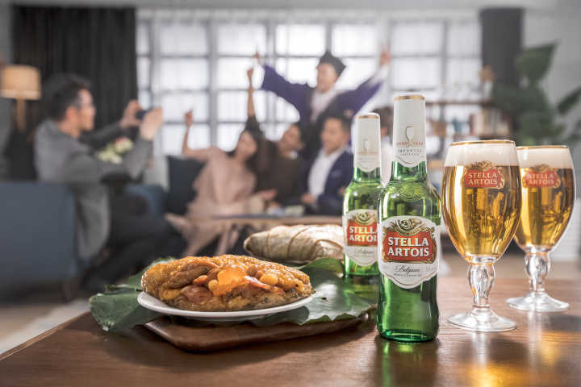 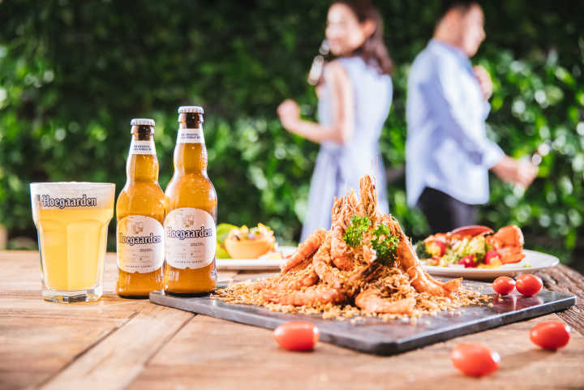C-Cut-对比
对比的原则是将食物和啤酒的质地和味道做对比，比如啤酒中的二氧化碳产生的沙口感与食物的油腻感形成对比。当我们在享用牛肉的时候，一杯酒花香气四溢的 IPA 就与红肉中的油脂味道形成了对比。而食物和啤酒之间还有苦味、甜味的对比等等。
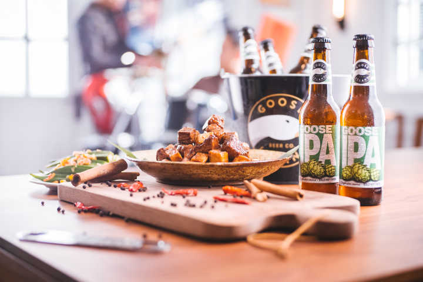4、什么场合更适合喝哪种啤酒？四大品类告诉你答案
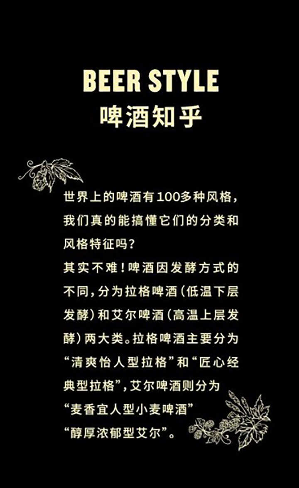拉格啤酒又可分为「清爽怡人型」和「匠心经典型」两种，清爽怡人的拉格酒液透亮，口感清新激爽，是派对聚会的必备，科罗娜、百威、米开罗、哈尔滨是这类的代表；
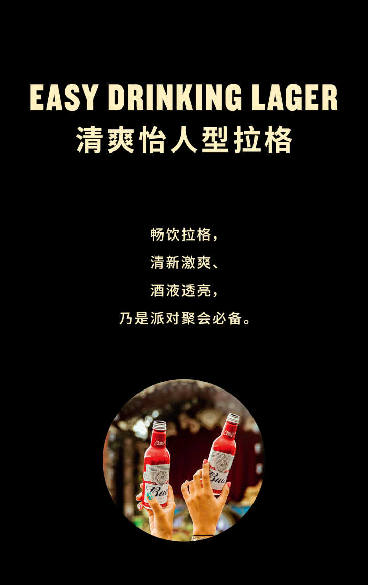匠心经典型拉格代表则为时代、贝克、斯巴腾和哈尔滨 1900 等，纯净酿造传承了欧洲经典，适合沙龙派对和庆典节日。
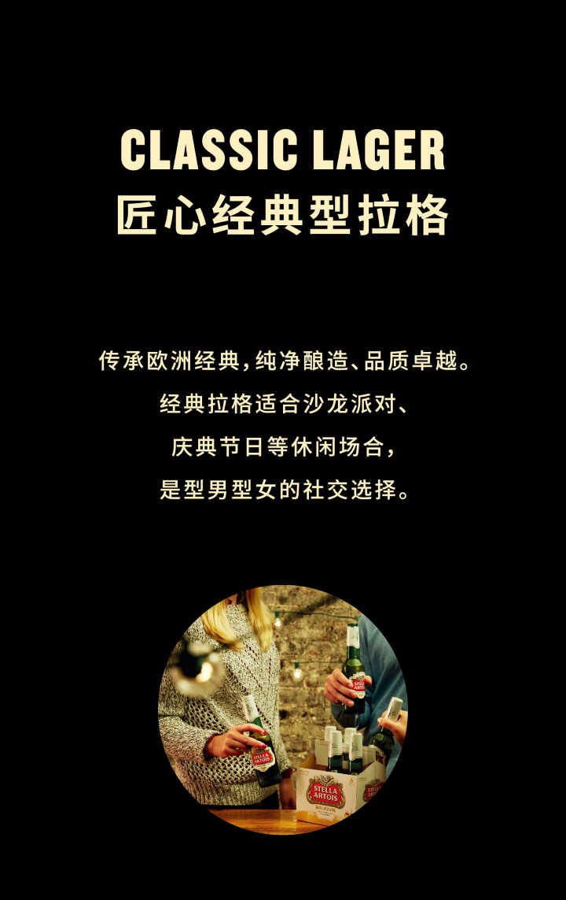而艾尔啤酒则分为「麦香型宜人型小麦啤酒」和「醇厚浓郁型艾尔」。前者风味天然、果香浓郁、泡沫细腻，白啤酒便是其中之一，是情侣约会的必备神器，代表为福佳、范佳乐、鹅岛 312、哈尔滨白啤等。
而「醇厚浓郁型艾尔」这类口感风味独特，十分适合独自品味，或者约上三两好友小酌一番，是犒赏放松的不二选择，代表为鹅岛 IPA，鹅岛苏菲艾尔，乐飞，宝丁顿等。
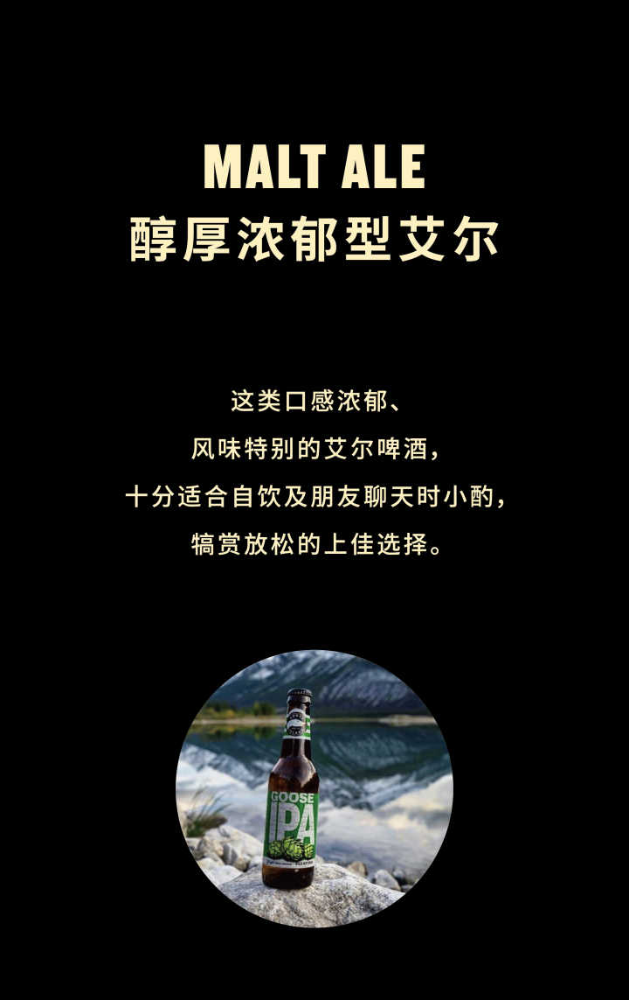5、用你的五感重新认识手中的啤酒
很多人对于啤酒的认知一直停留在「啤酒，水也」，很多人认为啤酒的宿命就应该是被用来吹瓶的。
而当你真正迈进啤酒的大门，你会惊叹的发现原来啤酒的世界是如此丰富：皮尔森，德式小麦，比利时双料、三料、四料，英式波特，燕麦世涛，帝国世涛，美式 IPA，浑浊 IPA，拉比克，酸啤，果啤……
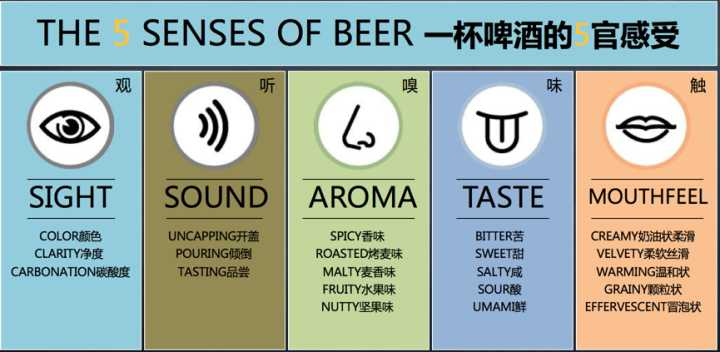一杯好的啤酒会从五感上给你带来非凡的体验——先观察它的颜色：是透明的金黄？还是浑浊？亦或是类似黑咖啡般的醇厚？接着我们去聆听酒体中气泡欢腾的声音，那是一杯啤酒是否具有活力的象征；然后将鼻尖靠近杯口，闻到了麦芽的香甜，还有一些草本植物的感觉，而那是啤酒花的味道；然后大口地喝下一口啤酒，慢慢地咽下，感受酒液在口中回温过程中带来不同的层次感，先是麦芽的甜香，酒花淡淡的苦味，还有一丝酵母发酵带来的特殊风味，最后紧接着而来的可能是一个充满了酒花味道的饱嗝；充分感受酒体给口腔带来的感受，是轻还是重，是脆爽还是浓稠……所有的一切，尽在一杯啤酒之中。